LABCAST / CREATIVE REVIEW / OCTOBER 16, 2026
You film.
Labcast broadcasts.
A full-screen illustrated opening, then seven chapters controlled by
scrolling. The same game carries through the story, ending with the people
watching from home.
Opening screen
CHAPTER 01
Bring your crew
Connect the phones and start with the event.
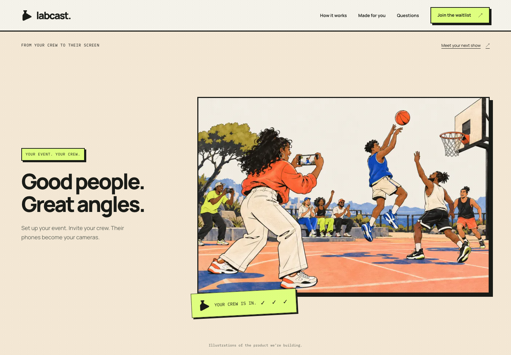
Phone composition
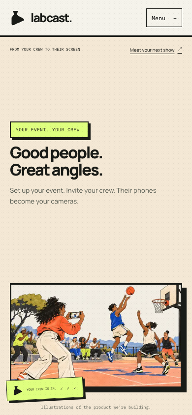
CHAPTER 02
Labcast handles the production
Labcast processes the views your crew provides; camera instructions are
optional.
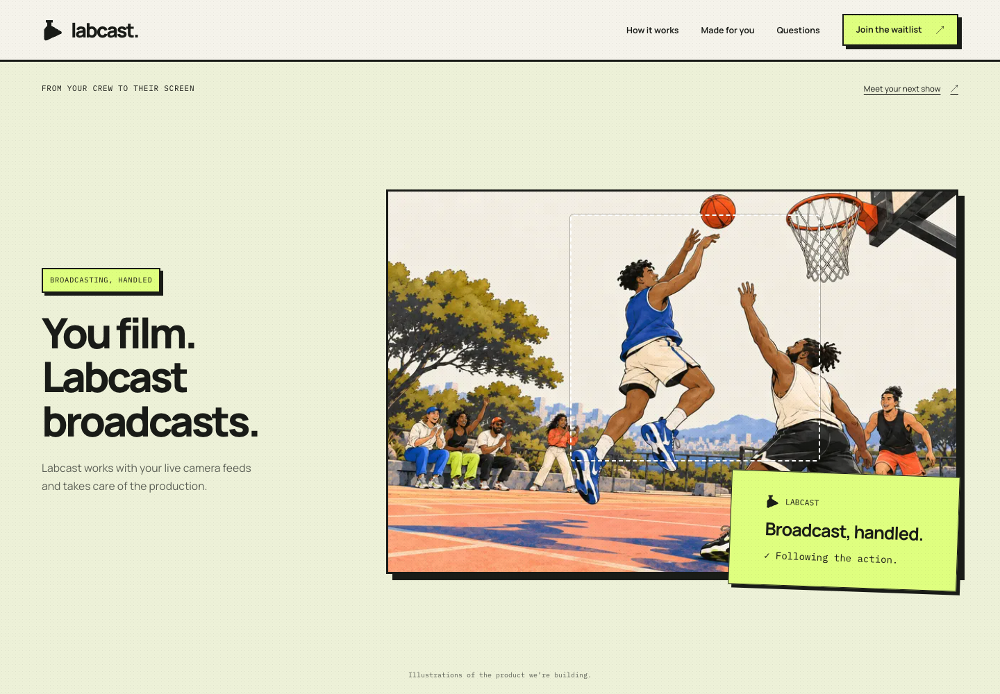
Phone composition
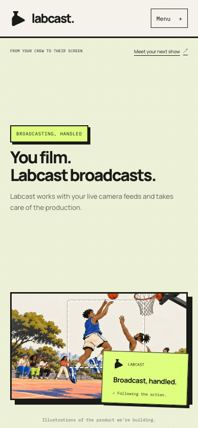
CHAPTER 03
Follow the action. Choose the shot.
Labcast selects an available view and brings it into one coherent show.
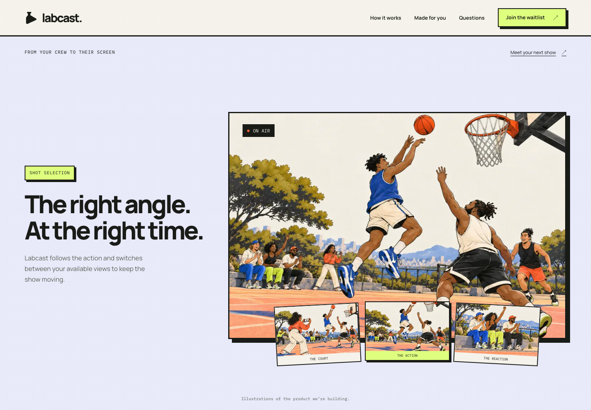
Phone composition
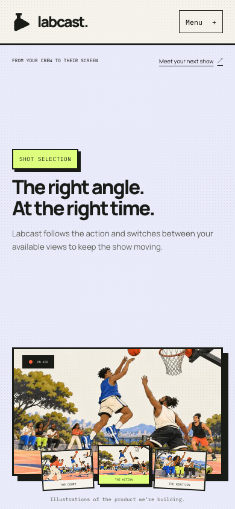
CHAPTER 04
Bring the moment back
Replays give important moments another showing.
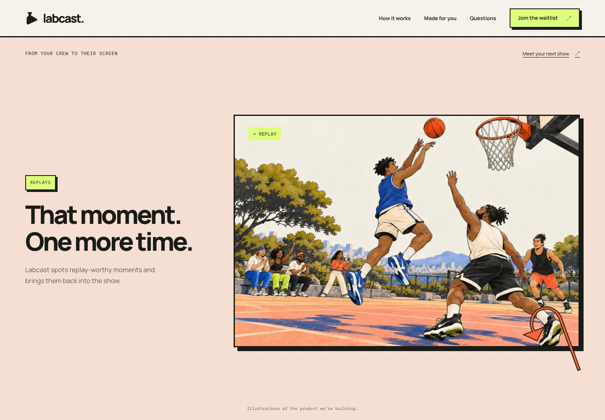
Phone composition
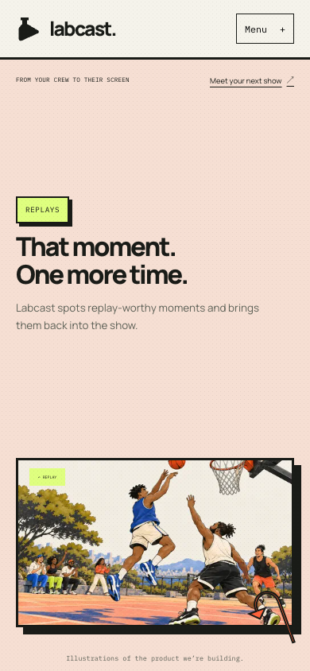
CHAPTER 05
Add commentary and graphics
The same broadcast gains context and presentation.
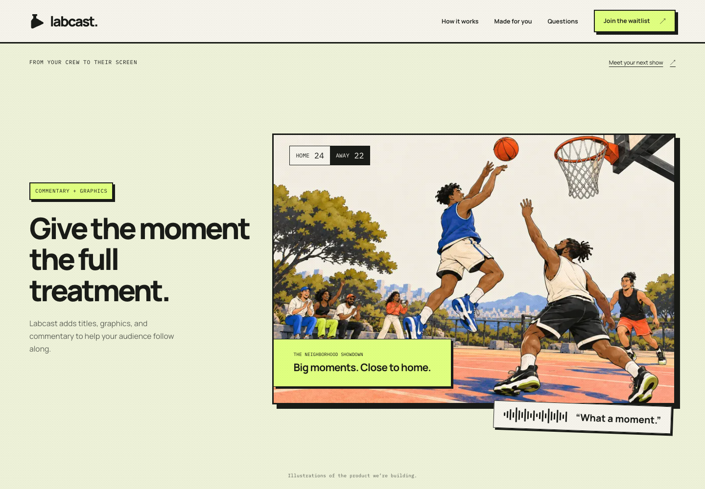
Phone composition
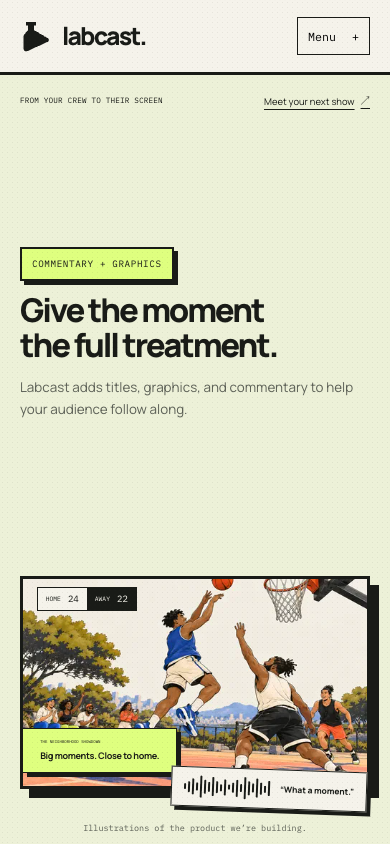
CHAPTER 06
Take control when you want
The operator can take over while Labcast remains the default.
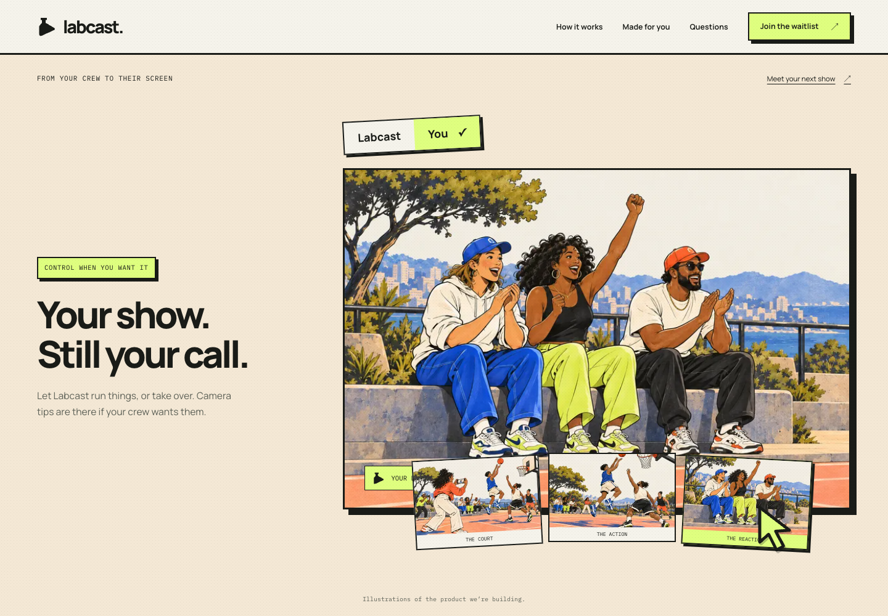
Phone composition
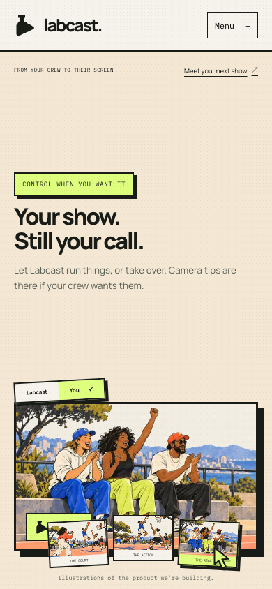
CHAPTER 07
Go straight to your audience
Planned direct destinations: Twitch, YouTube, TikTok, and Instagram.
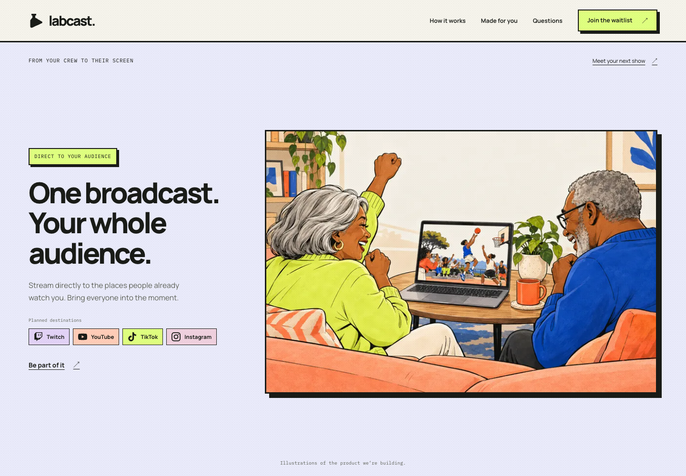
Phone composition
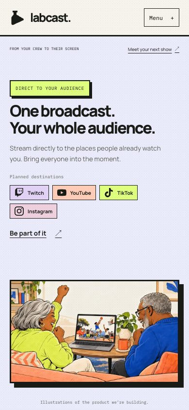